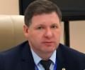
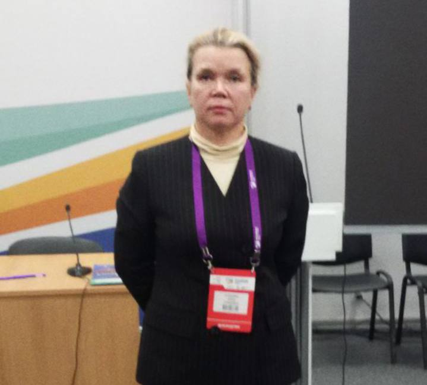
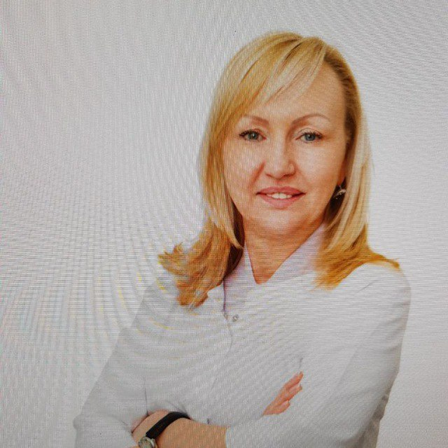

Приглашённые эксперты
Ведущие специалисты России поделятся опытом и лучшими практиками.
Годков М.А.
РМАНПО
Зав. кафедрой КЛД, врач НИИ им. Склифосовского

Иванов А.М.
ФЛМ, РАН
Президент ФЛМ, профессор, член-корр. РАН
Припутневич Т.В.
НМИЦ АГиП
Главный внештатный микробиолог Минздрава РФ
Воронков А.А.
Волгоград
Главврач по КЛД, директор медцентра
Ламбакахар М.Г.
РМАНПО
К.м.н., доцент кафедры КЛД
Калачева О.С.
МЕДСИ
Руководитель единой КДЛ ГК «МЕДСИ»

Сунцова И.Г.
ФЛМ, МО
Председатель Регкомитета ФЛМ по МО
Шатохина С.Н.
МОНИКИ
Профессор, зав. кафедрой КЛД МОНИКИ

Кудрявцева Л.В.
7 ЛЦ МНПЦЛИ
Зав. лабораторией КДЛ 7 Лабораторного центра